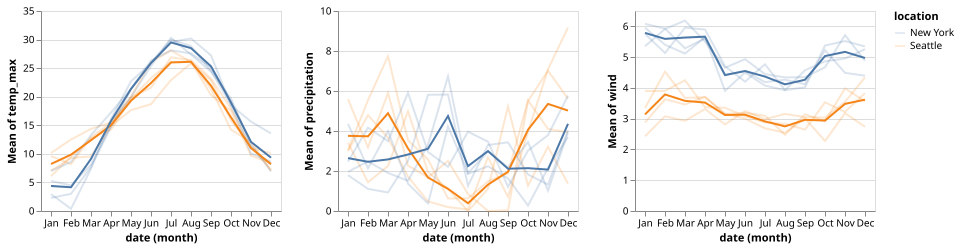
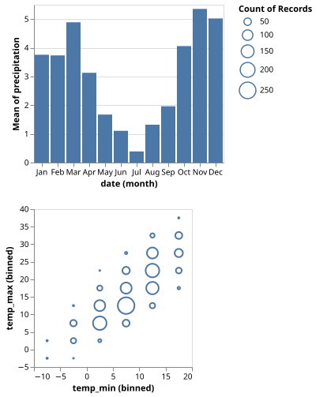
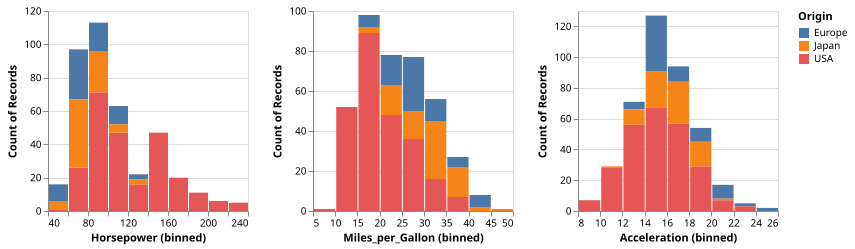
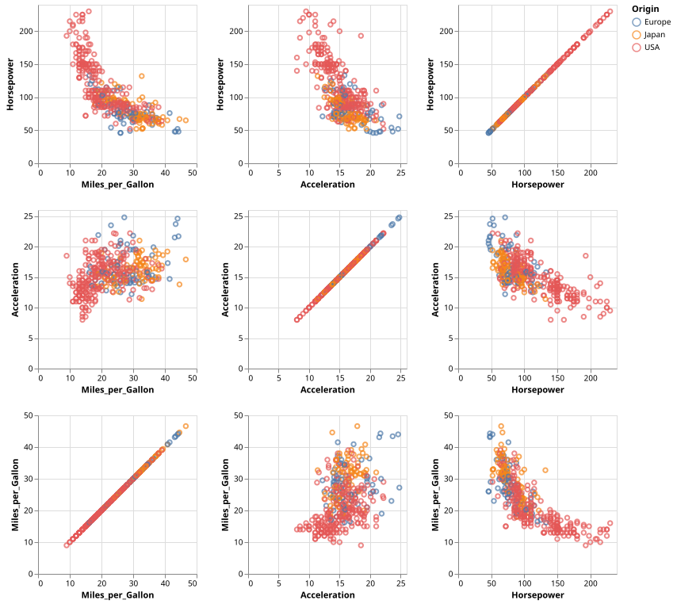
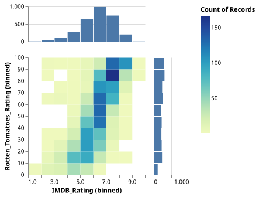

Repeat & Concatenation
Repeat and layer to show different weather measures
using VegaLite, VegaDatasets
dataset("weather.csv") |>
@vlplot(repeat={column=[:temp_max,:precipitation,:wind]}) +
(
@vlplot() +
@vlplot(
:line,
y={field={repeat=:column},aggregate=:mean,type=:quantitative},
x="month(date):o",
detail="year(date)",
color=:location,
opacity={value=0.2}
) +
@vlplot(
:line,
y={field={repeat=:column},aggregate=:mean,type=:quantitative},
x="month(date):o",
color=:location
)
)
Vertically concatenated charts that show precipitation in Seattle
using VegaLite, VegaDatasets
dataset("weather.csv") |>
@vlplot(transform=[{filter="datum.location === 'Seattle'"}]) +
[
@vlplot(:bar,x="month(date):o",y="mean(precipitation)");
@vlplot(:point,x={:temp_min, bin=true}, y={:temp_max, bin=true}, size="count()")
]
Horizontally repeated charts
using VegaLite, VegaDatasets
dataset("cars") |>
@vlplot(repeat={column=[:Horsepower, :Miles_per_Gallon, :Acceleration]}) +
@vlplot(
:bar,
x={field={repeat=:column},bin=true,type=:quantitative},
y="count()",
color=:Origin
)
Interactive Scatterplot Matrix
using VegaLite, VegaDatasets
dataset("cars") |>
@vlplot(
repeat={
row=[:Horsepower, :Acceleration, :Miles_per_Gallon],
column=[:Miles_per_Gallon, :Acceleration, :Horsepower]
}
) +
@vlplot(
:point,
selection={
brush={
type=:interval,
resolve=:union,
on="[mousedown[event.shiftKey], window:mouseup] > window:mousemove!",
translate="[mousedown[event.shiftKey], window:mouseup] > window:mousemove!",
zoom="wheel![event.shiftKey]"
},
grid={
type=:interval,
resolve=:global,
bind=:scales,
translate="[mousedown[!event.shiftKey], window:mouseup] > window:mousemove!",
zoom="wheel![!event.shiftKey]"
}
},
x={field={repeat=:column}, type=:quantitative},
y={field={repeat=:row}, type=:quantitative},
color={
condition={
selection=:brush,
field=:Origin,
type=:nominal
},
value=:grey
}
)
Marginal Histograms
using VegaLite, VegaDatasets
p_hist1 = @vlplot(
:bar,
height=60,
x={:IMDB_Rating, bin=true, axis=nothing},
y={"count()", scale={domain=[0,1000]}, title=nothing}
)
p_main = @vlplot(
:rect,
x={"IMDB_Rating:q", bin=true},
y={"Rotten_Tomatoes_Rating:q", bin=true},
color="count()"
)
p_hist2 = @vlplot(
:bar,
width=60,
y={"Rotten_Tomatoes_Rating:q", bin=true, axis=nothing},
x={"count()", scale={domain=[0,1000]}, title=nothing}
)
dataset("movies") |>
@vlplot(spacing=15, founds=:flush, config={view={stroke=:transparent}}) + [p_hist1; @vlplot(spacing=15, bounds=:flush) + [p_main p_hist2]]